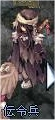
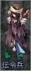
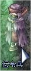
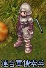
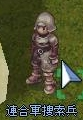
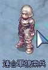
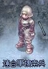

画像にリンクがはってあるものは、クリックすると別窓で大きめサイズが表示されます。
[アジフ]
所在地；ミッドガルド連合軍駐屯地中央建物内 |
   |
[イグリド]
所在地；ミッドガルド連合軍駐屯地中央建物内 |
   |
[アビダル]
所在地；ミッドガルド連合軍駐屯地中央建物内 |
    |
[伝令兵]
所在地；ミッドガルド連合軍駐屯地（206,286） |
 |
[元気な伝令兵]
所在地；ミッドガルド連合軍駐屯地（206,286）付近 |
|  |
[不気味な伝令兵]
所在地；ミッドガルド連合軍駐屯地（206,286）付近 |
|  |
[連合軍捜索兵]
所在地；スプレンディッドフィールド02（296,369） |
  |
[連合軍捜索兵]
所在地；スプレンディッドフィールド03（172,71） |
|  |
[連合軍捜索兵]
所在地；マヌクフィールド01（316,92） |
|  |
[連合軍捜索兵]
所在地；マヌクフィールド02（202,251） |
|  |
back
(c) Gravity Co., Ltd. & Lee MyoungJin(studio DTDS). All rights reserved.
(c) GungHo Online Entertainment, Inc. All Rights Reserved.
当コンテンツの再利用（再転載・配布など）は、禁止しています。